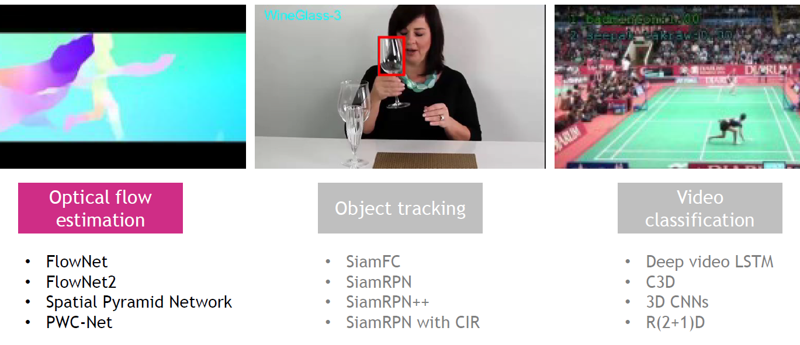

Teaching
Technical presentations
 |
Tutorial on How to review scientific papers Seminar to a group of students from the Centre for Intelligent Sensing (CIS) Queen Mary University of London [More details] |
|
 |
Deep learning models for computer vision ECS709 - Introduction to Computer Vision (Winter 2022) Lecturer: Prof. A. Cavallaro Queen Mary University of London |
 |
Interest Points ECS709 - Introduction to Computer Vision (Winter 2022) Lecturer: Prof. A. Cavallaro Queen Mary University of London |
Supervision
- N. Ha, Research Assistant (with Dr. Changjae Oh), Queen Mary University of London, Visual-language models for Object Re-Identification, 2025
- T. Apicella, PhD student (with Prof. Andrea Cavallaro), Queen Mary University of London, Visual Affordance Segmentation, 2022-2024
- Y. L. Pang, PhD student (with Dr. Changjae Oh and Prof. Andrea Cavallaro), Queen Mary University of London, Safe Human-to-Robot Handovers, 2021-2025
- X. Weber, MSc student and Research Assistant (with Prof. Andrea Cavallaro), Queen Mary University of London, Object Pose Estimation, 2020-2022
- S. Donaher, MSc student and Research Assistant (with Prof. Andrea Cavallaro), Queen Mary University of London, Audio Classification, 2022-2021
Lab Demonstrator
Queen Mary University of London
- ECS709 - Introduction to Computer Vision, 2019, Lecturer: Prof. A. Cavallaro, Number of students: 66
- ECS709 - Introduction to Computer Vision, 2018, Lecturer: Prof. A. Cavallaro, Number of students: 33
Note: The role was formerly known as Postgraduate Teaching Assistant.